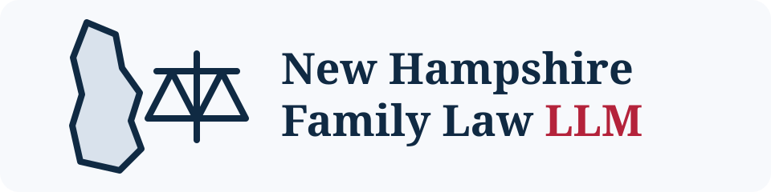

Ink Navy#07131F
Primary app background; highest contrast base.
New Hampshire Family Law LLM
New Hampshire Family Law LLM Brand Guide
Local source-backed • Review required • Not legal advice
Brand position
A calm, local, source-backed research workbench under the New Hampshire Family Law LLM public-service umbrella. Not a law firm, not a court portal, not a campaign funnel, and not a private case intake system.
Primary logo

Palette
Deep Ocean#0C1D2B
Header and page shell.
Harbor Panel#10283A
Primary cards/panels on dark UI.
Harbor Panel 2#153447
Raised cards, answer panels, source cards.
Blue Spruce#285A7A
New Hampshire public-service blue; borders, secondary buttons, section headers.
River Teal#23D3C1
Primary action color, local model status, active states.
Sea Glass#8DECE2
Highlights, glows, small icons, focus rings.
Warm Paper#F6F1E7
Light-mode page background and printable materials.
Soft Cream#FFF9EC
Notices and human-readable legal disclaimers in light mode.
Review Gold#F6C96D
Reviewer required, uncertainty, source-check prompts.
Safety Coral#FF8A7A
Safety flags and warnings only; do not overuse.
Pine Green#3EA97C
Support-first / stability cues.
Text Primary Dark#EAF7F6
Text on dark backgrounds.
Text Secondary Dark#AFC6CB
Muted text on dark backgrounds.
Border Dark#244B62
Card and input borders.
Components
This tool provides New Hampshire family-law research from retrieved source snippets. It does not create an attorney-client relationship, does not replace review by a qualified professional, and does not accept private case intake.
local AI online review required source grounded
Source card title
A clear source excerpt with enough context to inspect before relying on the answer.